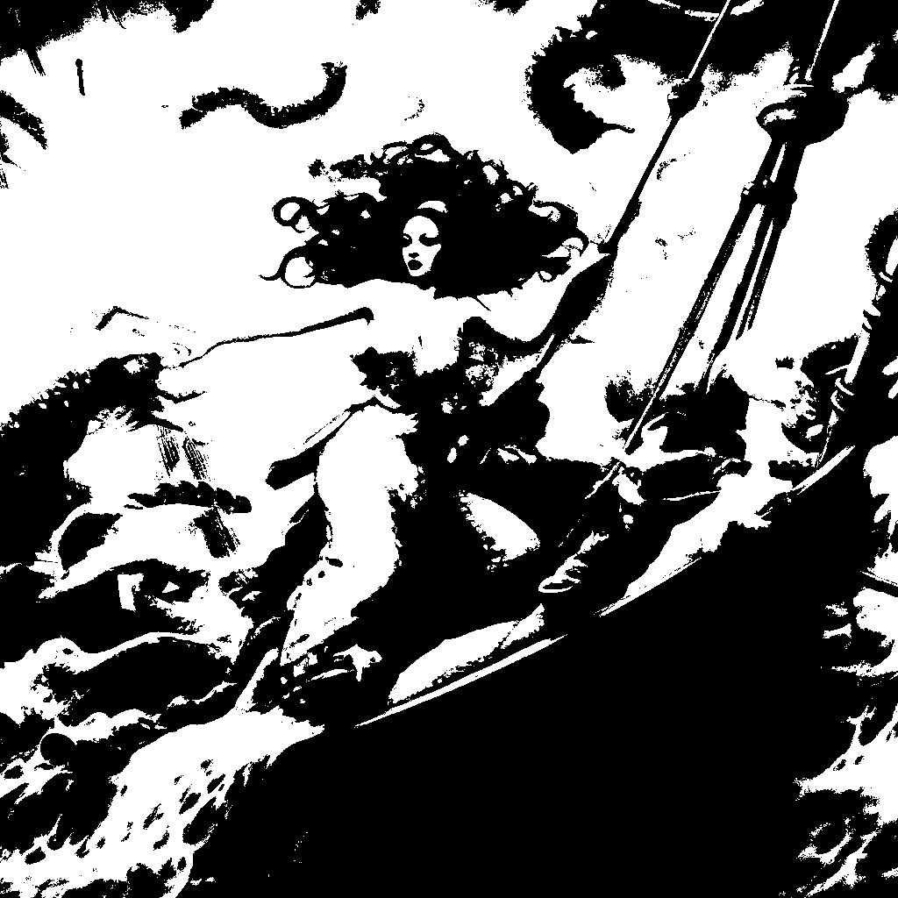

03. 붕괴된 항해

인어들의 앞선 지속적인 공격으로 배는
이미 많은 곳이 파괴되었고
선원들이 이미 모두 지쳐있었다.
선장은 결정을 내릴 수 밖에 없다.
상황은 악화되어,
오브라 딘 호의 종말이
머지 않았다.
인어들의 앞선 지속적인 공격으로 배는
이미 많은 곳이 파괴되었고
선원들이 이미 모두 지쳐있었다.
선장은 결정을 내릴 수 밖에 없다.
선장은 예전에 잡아두었던 인어를 협박해
크라켄을 바다로 돌려보내라 했다.
협박에 마지못해 인어는 크라켄을 쫓아버린다.
모든 것들이 파괴되고
선장과 남아있는 선원은 바다의 보물을
두고 다투다
결국 모두 사망하게 된다.
오브라 딘 호는 모든 게 끝나 유령선이 되었다.
진실을 그렇게 묻힐 뻔 했지만...
협박을 당하던 인어를 풀어준 선원의 유언에 따라
인어는 오브라 딘 호를 사람들이 있는 곳으로 돌려보냈다.